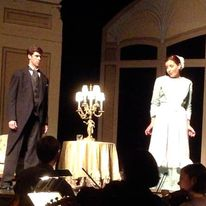
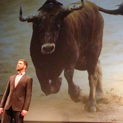

Mr. Ford from Falstaff
From the 2012 University of Michigan production of Verdi's Falstaff.

Count Almaviva from Le Nozze di Figaro
From the 2013 Arbor Opera Theater production of Le Nozze di Figaro
Some Studio Work
Fun recording session with the one and only Paul Langford from 2019.

The Toreador Song from Carmen
From a 2018 performance of "Opera Up Close" at Governor's State University.

Morales from Carmen
From the 2015 Opera Grand Rapids production of Carmen.